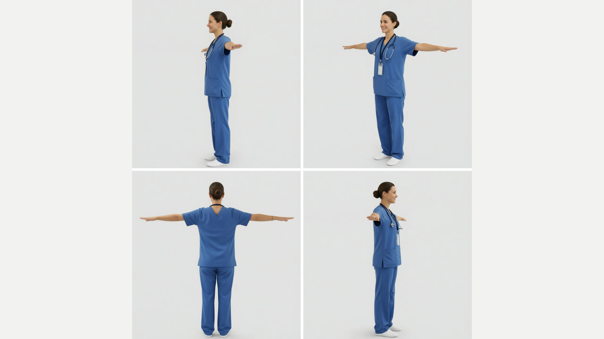

03 · Vídeo con IA generativaGenerative AI video
Spot de 66 segundos para FUDEN que presenta e-Nurse, siete cursos online de enfermería digital. Todos los planos con personas están generados con IA.A 66-second spot for FUDEN presenting e-Nurse, seven online courses in digital nursing. Every shot with people in it is AI-generated.
El reto: que la misma enfermera (cara, uniforme, sin joyas, como pidió el cliente) se mantuviera igual en más de diez planos distintos, y que las tablets y el móvil enseñaran interfaces reales.The challenge: keep the same nurse (face, uniform, no jewellery, as the client asked) consistent across more than ten different shots, and make the tablets and phone show real interfaces.
La solución: creé el personaje en ComfyUI con una hoja de poses y ángulos, generé cada fotograma clave a partir de ella, lo llevé a realismo con Gemini y lo animé con Wan 2.2. En After Effects seguí las pantallas con scripts propios (sin Mocha) e integré las interfaces, la web real en el móvil y los hologramas. El panal de los siete cursos es 3D en Blender. Solo se usaron modelos con licencia comercial.The solution: I built the character in ComfyUI with a pose and angle sheet, generated every keyframe from it, pushed realism with Gemini and animated with Wan 2.2. In After Effects I tracked the screens with my own scripts (no Mocha) and integrated the interfaces, the real website on the phone and the holograms. The seven-course honeycomb is 3D in Blender. Only commercially licensed models were used.

01
PersonajeCharacter
Hoja de personaje en pose T y cuatro ángulos con Qwen Image Edit: la referencia de todo el spot.Character sheet in T-pose and four angles with Qwen Image Edit: the reference for the whole spot.
02
Fotograma claveKeyframe
Cada plano se genera con el personaje como referencia, con LoRAs de cámara y de luz para explorar encuadres.Each shot is generated with the character as reference, using camera and lighting LoRAs to explore framing.
03
Realismo y animaciónRealism and motion
Paso de realismo con Gemini y animación de imagen a vídeo con Wan 2.2. Pantallas en blanco a propósito.Realism pass with Gemini and image-to-video animation with Wan 2.2. Screens left blank on purpose.
04
IntegraciónIntegration
Pantallas seguidas con scripts, interfaces, hologramas y rótulos en After Effects.Script-tracked screens, interfaces, holograms and titles in After Effects.
ContactoContact
Disponible para proyectos freelance y puestos en remoto o en Madrid.Available for freelance projects and remote or Madrid-based roles.